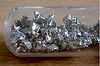

calcium

Definition: Calcium is a chemical element with the symbol Ca and atomic number 20. As an alkaline earth metal, calcium is a reactive metal that forms a dark oxide-nitride layer when exposed to air. Its physical and chemical properties are most similar to its heavier homologues strontium and barium. It is the fifth most abundant element in Earth's crust, and the third most abundant metal, after iron and aluminium. The most common calcium compound on Earth is calcium carbonate, found in limestone and the fossilised remnants of early sea life; gypsum, anhydrite, fluorite, and apatite are also sources of calcium. The name derives from Latin calx "lime", which was obtained from heating limestone.
Source: Wikipedia
Wikipedia Page
Wikidata Page